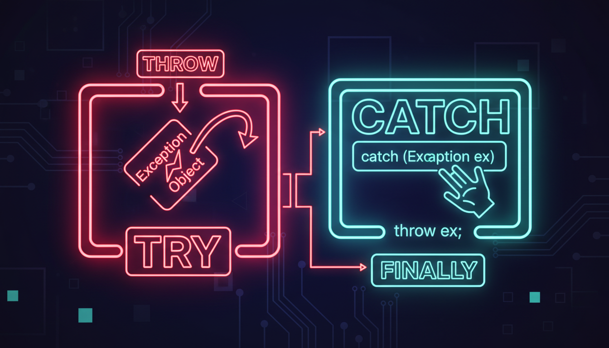

try, catch, throw, ієрархія винятків, noexcept

Винятки — це механізм обробки помилок, що перериває нормальний потік виконання програми і передає керування обробнику помилок.
#include <iostream>
#include <stdexcept>
#include <string>
double divide(double a, double b) {
if (b == 0) {
throw std::runtime_error("Ділення на нуль!");
}
return a / b;
}
int main() {
try {
double result = divide(10, 0);
std::cout << "Результат: " << result << std::endl;
}
catch (const std::runtime_error& e) {
std::cout << "Помилка: " << e.what() << std::endl;
}
catch (const std::exception& e) {
std::cout << "Загальна помилка: " << e.what() << std::endl;
}
catch (...) {
std::cout << "Невідома помилка!" << std::endl;
}
std::cout << "Програма продовжує роботу." << std::endl;
return 0;
}| Виняток | Опис |
|---|---|
| std::exception | Базовий клас винятків |
| std::runtime_error | Помилка часу виконання |
| std::logic_error | Логічна помилка |
| std::out_of_range | Вихід за межі |
| std::bad_alloc | Помилка виділення пам'яті |